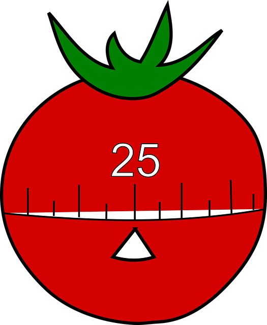

What is the Pomodoro method
The Pomodoro method is a time management technique designed to help split tasks into managable blocks.
It breaks work into 25 minute intervals, separated by 5 minute breaks. Each interval is known as a pomodoro, from the Italian word for tomato. The name comes from the tomato-shaped kitchen timer that Francesco Cirillo used as a university student, where he created the technique.
After 4 work sessions, take a longer 20 minute break. This prevents fatigue and helps maintain productivity.
Additional resources
If you would like to learn more, please check out these links:
- Pomodoro technique – Wikipedia article on the Pomodoro Technique
- How and why the Pomodoro Technique works – Todoist article on the reasoning and benefits behind the technique